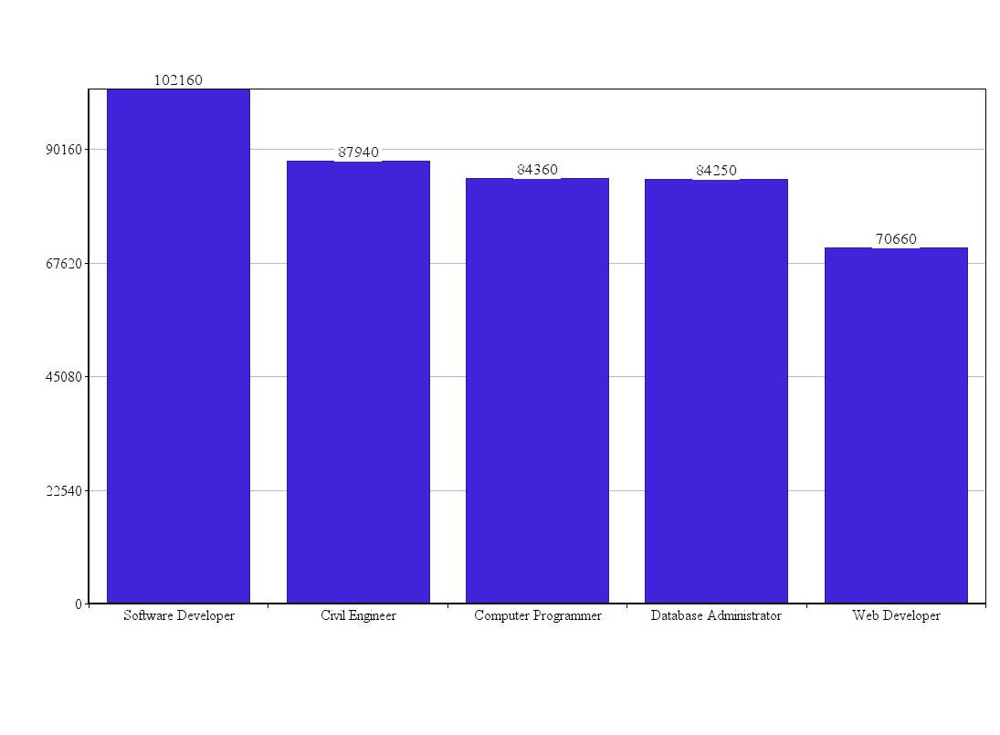

Java Development & Programming includes, but is not limited to:
Java Programming prepares individuals to create, monitor, and maintain computer programs and enterprise websites. Students will learn how to use HTML5, CSS3, and JavaScript. They will have plenty of time at home and in class to learn these languages along with being able to learn other languages on their own. After successfully completing this program, the student will be able to perform advanced business computer programming techniques in game development.
The student will also have developed skills in:
The amount of time it takes to learn how to code is all depenent on you. The minimum amount of time it could take to be ready to make a basic website could be less than a week. To be decent in knowing what to do could take up to a few months. To fully master will take a lifetime since coding is always changing every time we find more ways to use it. So once you learn everything there is to know a new version of a language could come out. So you'll have to start learning everything that's new along with everything you already know, since it could have been changed in some way.
The BLS reports the median annual wage for computer programmers was $79,530 in 2015. The best-paid 10 percent in the field made approximately $130,800, while the bottom 10 percent made approximately $44,450. The highest-paid in the profession work in the metropolitan areas of Seattle; San Francisco; and Albuquerque, New Mexico.
The highest paid in the computer programmer proffession work in the metropolition areas of Seattle, San Francisco, and Albuquerque, New Mexico. Though Anchorage Alaska area also pays well, as does the city of Vallejo in California.
The states where compensation is highest for computer programmers are Washington ($119,040), New Mexico ($101,190), Alaska ($95,630), Massachusetts ($95,370), and the District of Columbia ($93,660). The average hourly wage for computer programmers was $40.56 in 2015. The following graph shows the average computer programmer pay with the pay of other jobs that are related to computer programming.
